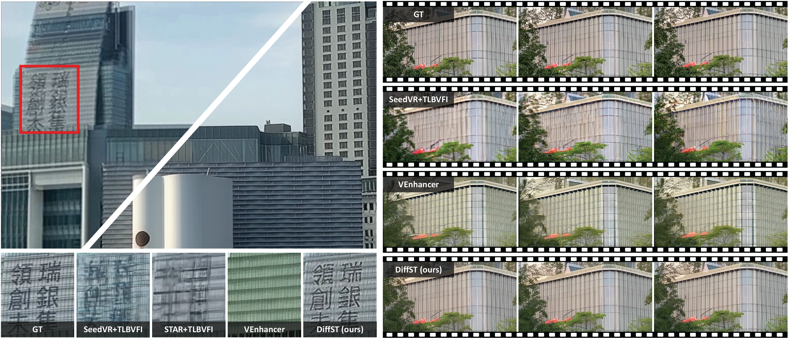
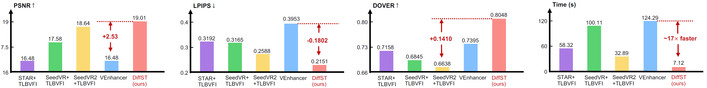
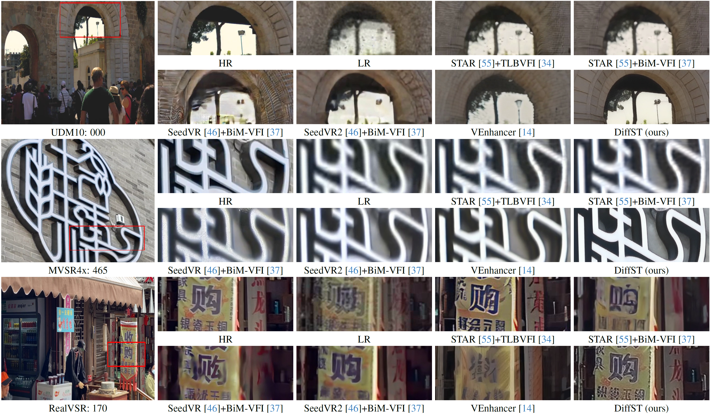

- Quantitative Results (Tab. 4 of the main paper)


Visual comparison on the real-world dataset. Our proposed DiffST outperforms others with rich and consistent details.
Reinforcement-learning controllers for quadruped robots can acquire agile locomotion policies from large-scale simulation, but policies trained in a nominal rough-terrain setting often fail when terrain geometry, contact friction, payload mass, and external perturbations change simultaneously. This work studies a central question: how can an existing Legged Gym PPO locomotion pipeline be systematically modified so that the resulting Unitree A1 policy is not merely successful on the training terrain, but robust under coupled terrain and dynamics shifts? We formulate robustness improvement as a distribution-expansion problem over terrain, physical parameters, and disturbance processes, and we implement a three-component solution within Isaac Gym and Legged Gym: complex-terrain enrichment, domain randomization of friction and base mass with external pushes, and reward shaping for posture stability and action smoothness.

DiffST performs one-step sampling to process the entire video directly. The cross-frame context aggregation (CFCA) module aggregates information from multiple frames to generate intermediate frames.
The

The proposed DiffST achieves superior performance in terms of fidelity, perceptual, and consistency. In addition, compared with the multi-step STVSR method, VEnhancer, DiffST achieves approximately 17× faster inference speedup.
